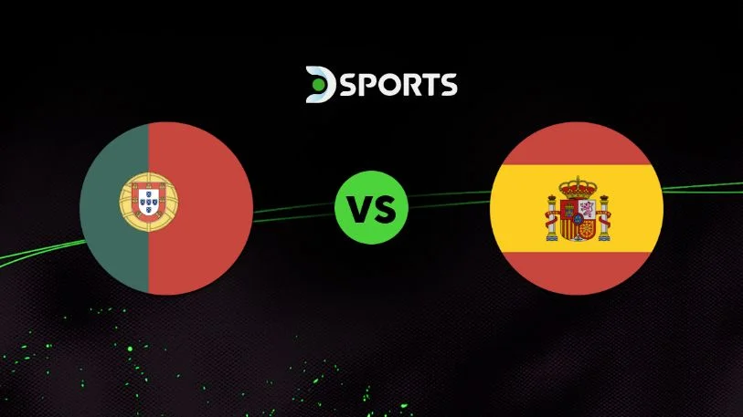

Camino a Cuartos de Final
Portugal vs España

España y Portugal se enfrentaran en el Dallas Stadium (AT&T Stadium) este 6 de julio de 2026, un partido entre 2 selecciones que comparten la misma peninsula en el que se espera ver gran rivalidad.